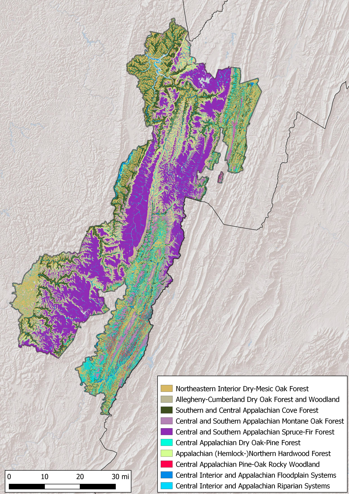
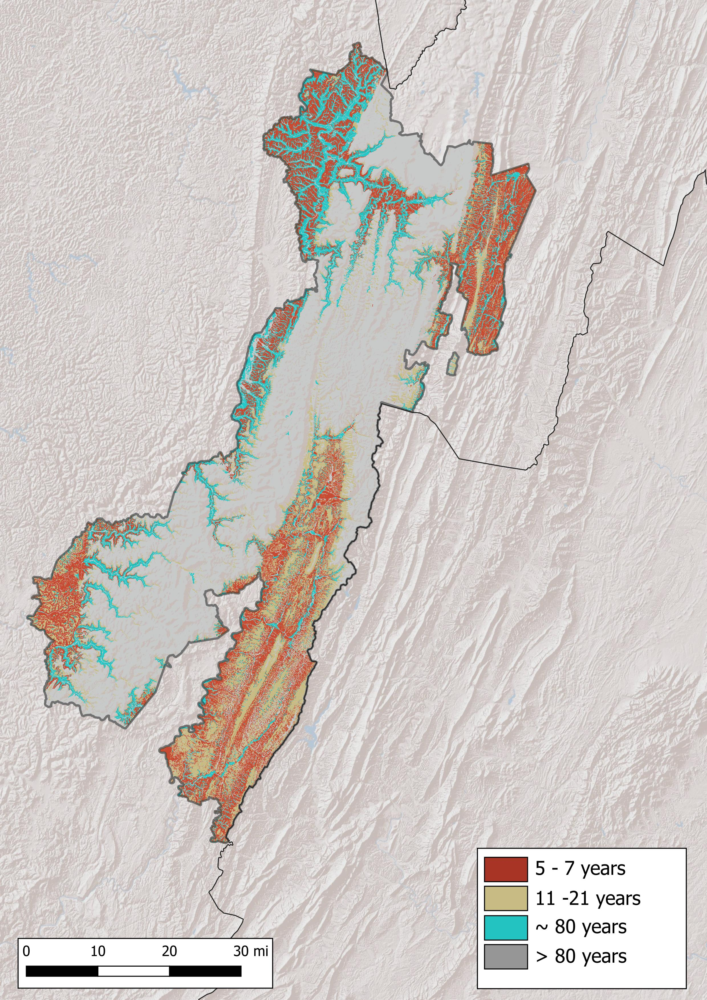

Past
LANDFIRE’s Biophysical Settings (BpSs, aka “Historical Ecosystems”) represent “the vegetation system that may have been dominant on the landscape prior to Euro-American settlement and is based on both the current biophysical environment and an approximation of the historical disturbance regime.” (from https://landfire.gov/bps.php). We will use this data to explore the most prevalent BpSs in a chart and map, and also the historical disturbance data that are linked to the BpSs.
Summary
Chart of most prevalent Biophysical Settings
Map of most prevalent Biophysical Settings

Chart of historic annual acres burned per ecosystem

Simplified map of historical fire regimes

All historical disturbances per ecosystem
Data table
| ZONE | BPS_MODEL | BPS_NAME | GROUPVEG | FRI_REPLAC | FRI_MIXED | FRI_SURFAC | FRG_NEW | ACRES | REL_PERCENT |
|---|---|---|---|---|---|---|---|---|---|
| 61 | 13500_61 | Central and Southern Appalachian Spruce-Fir Forest | Conifer | 834 | 12,028 | NA | V-B | 454,640 | 26.6 |
| 61 | 13030_61_63_64_65_66 | Northeastern Interior Dry-Mesic Oak Forest | Hardwood | 39 | 24 | 9 | I-B | 350,800 | 20.5 |
| 61 | 13700_53_61_62 | Appalachian (Hemlock-)Northern Hardwood Forest | Hardwood | 1,036 | 1,083 | NA | V-B | 298,073 | 17.5 |
| 61 | 13180_57_59_61 | Southern and Central Appalachian Cove Forest | Hardwood | 994 | 498 | 100 | III-A | 188,784 | 11.1 |
| 61 | 13200_48_57_61 | Central and Southern Appalachian Montane Oak Forest | Hardwood | 147 | 95 | 33 | I-C | 126,209 | 7.4 |
| 61 | 14720_61_62_63 | Central Interior and Appalachian Riparian Systems | Riparian | 1,001 | NA | 200 | III-B | 107,942 | 6.3 |
| 61 | 13690_60_61_63_64_65_66 | Central Appalachian Dry Oak-Pine Forest | Hardwood-Conifer | 182 | 463 | 15 | I-B | 100,688 | 5.9 |
| 61 | 13770_60_61_63_64_65_66 | Central Appalachian Pine-Oak Rocky Woodland | Hardwood-Conifer | 412 | 384 | 4,645 | III-B | 18,171 | 1.1 |
| 61 | 13170_57_61 | Allegheny-Cumberland Dry Oak Forest and Woodland | Hardwood | 123 | 59 | 15 | I-B | 15,608 | 0.9 |
| 61 | 14710_47_48_53_54_57_59_60_61_63 | Central Interior and Appalachian Floodplain Systems | Riparian | 613 | 392 | 121 | III-A | 15,857 | 0.9 |
| NA | NA | Open Water | Open Water | NA | NA | NA | NA | 10,904 | 0.6 |
| 61 | 13210_61_63 | South-Central Interior Mesophytic Forest | Hardwood | 847 | 573 | 102 | III-A | 10,729 | 0.6 |
| 61 | 14790_60_61_63_64_65_66 | Central Interior and Appalachian Swamp Systems | Riparian | 1,011 | NA | 1,353 | V-B | 5,031 | 0.3 |
| 61 | 13760_48_53_57_61 | Southern Ridge and Valley/Cumberland Dry Calcareous Forest | Hardwood | 187 | 109 | 8 | I-B | 1,657 | 0.1 |
| 61 | 14000_60_61 | Central Appalachian Alkaline Glade and Woodland | Savanna | 5 | 19 | 1,583 | II-A | 1,123 | 0.1 |
| NA | NA | Barren-Rock/Sand/Clay | Barren-Rock/Sand/Clay | NA | NA | NA | NA | 0 | 0.0 |
| 61 | 13150_48_53_57_59_61 | Southern Appalachian Oak Forest | Hardwood | 604 | 138 | 16 | I-B | 127 | 0.0 |
| 61 | 13400_61 | Appalachian Shale Barrens | Hardwood | NA | 1,025 | NA | V-B | 275 | 0.0 |
| 61 | 13520_53_54_57_59_60_61 | Southern Appalachian Montane Pine Forest and Woodland | Conifer | 88 | 101 | 5 | I-A | 687 | 0.0 |